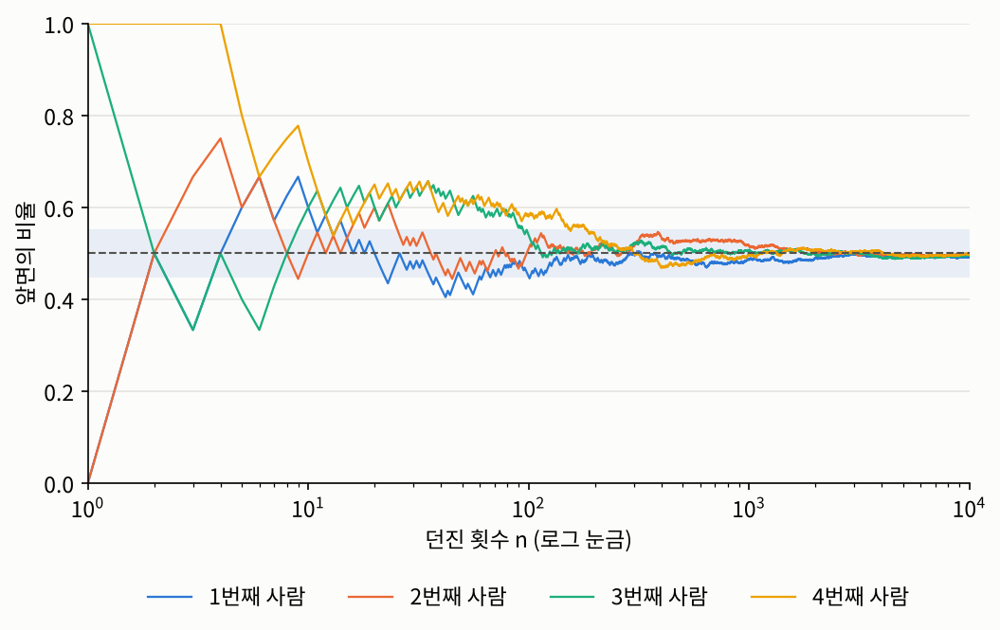

1.1 거의 확실한 수렴
1장 확률변수가 가까워진다는 것 · 한 사람의 기록은 끝내 참값에 닿는가
들어가며
1장 소개 글에서 던진 첫 번째 질문은 이것이었습니다. 박종우 씨가 동전을 끝없이 던진다면, 박종우 씨의 앞면 비율은 결국 \(1/2\)에 도달할까요?
이 질문은 한 사람의 기록 전체에 대한 질문입니다. 박종우 씨가 던진 결과는 앞면, 뒷면, 뒷면, 앞면, … 하는 하나의 무한한 기록이고, 그 기록에서 계산한 앞면 비율 \(\bar{X}_1, \bar{X}_2, \bar{X}_3, \ldots\)은 그냥 실수의 열입니다. 그러니 질문은 결국 “이 실수열이 \(1/2\)로 수렴하는가?”가 됩니다. 이번 글에서는 이 생각을 정확하게 만든 것이 거의 확실한 수렴(almost sure convergence)이라는 것을 보고, 동전의 앞면 비율이 실제로 그렇게 수렴한다는 것을 직접 증명해 보겠습니다.
네 사람의 기록 따라가기
먼저 컴퓨터로 네 사람에게 동전을 1만 번씩 던지게 하고, 각자의 앞면 비율이 어떻게 변하는지 기록해 보겠습니다. \(1/2\)에서 \(0.05\) 이내, 즉 \([0.45, 0.55]\)를 “띠”라고 부르고, 각 사람이 이 띠 밖에 마지막으로 있었던 시점도 함께 찾아보겠습니다.
import numpy as np
rng = np.random.default_rng(1557)
people, n_max = 4, 10_000
X = rng.integers(0, 2, size=(people, n_max)) # 앞면 = 1, 뒷면 = 0
n = np.arange(1, n_max + 1)
S = X.cumsum(axis=1) # 앞면의 개수 S_1, ..., S_n
Xbar = S / n # 앞면의 비율 X̄_1, ..., X̄_n
for j in range(people):
# |X̄_n - 1/2| > 0.05 를 정수 연산으로: |2 S_n - n| * 10 > n
outside = np.nonzero(np.abs(2 * S[j] - n) * 10 > n)[0]
last = outside[-1] + 1 if len(outside) > 0 else 0
vals = ", ".join(f"{Xbar[j, m - 1]:.4f}" for m in [10, 100, 1000, 10_000])
print(f"{j + 1}번째 사람: X̄_n (n=10, 100, 1000, 10000) = {vals} | 띠 밖에 마지막으로 있었던 n = {last}")1번째 사람: X̄_n (n=10, 100, 1000, 10000) = 0.6000, 0.4500, 0.4860, 0.4916 | 띠 밖에 마지막으로 있었던 n = 101
2번째 사람: X̄_n (n=10, 100, 1000, 10000) = 0.5000, 0.5100, 0.5170, 0.4971 | 띠 밖에 마지막으로 있었던 n = 45
3번째 사람: X̄_n (n=10, 100, 1000, 10000) = 0.6000, 0.5400, 0.5060, 0.4960 | 띠 밖에 마지막으로 있었던 n = 98
4번째 사람: X̄_n (n=10, 100, 1000, 10000) = 0.7000, 0.5800, 0.4960, 0.4975 | 띠 밖에 마지막으로 있었던 n = 185비교를 정수 연산으로 한 것은, \(0.55 - 0.5\) 같은 소수 계산이 컴퓨터 안에서 정확히 \(0.05\)가 되지 않아 띠의 경계에 걸친 값이 잘못 분류되는 일을 막기 위해서입니다.

네 사람 모두 처음에는 비율이 크게 흔들리지만, 어느 시점부터는 띠 안에 들어와서 다시는 나가지 않습니다. 그 시점은 사람마다 다릅니다. 2번째 사람은 46번째부터, 4번째 사람은 186번째부터 계속 띠 안에 있었습니다. 띠를 더 좁게, 예컨대 \(0.01\)로 잡으면 이 시점은 더 늦어지겠지만, 그래도 언젠가는 찾아올 것 같습니다.
물론 1만 번까지만 보고 “다시는 나가지 않는다”고 말할 수는 없습니다. 1만 1번째 이후의 일은 시뮬레이션이 알려 주지 않습니다. 끝없는 기록 전체에 대해 무언가를 말하려면 수학이 필요합니다.
표본점마다 하나씩, 실수열
동전을 끝없이 던진 한 사람의 기록은 \(0\)과 \(1\)로 이루어진 무한수열 하나입니다. 그래서 표본공간을 이런 수열 전체의 집합 \(\Omega = \{0, 1\}^{\mathbb{N}}\)으로 잡고, \(\omega = (\omega_1, \omega_2, \ldots) \in \Omega\)에 대해 \(X_i(\omega) := \omega_i\)로 두면 자연스럽습니다. 각 \(X_i\)가 \(\mathrm{Bin}(1, \tfrac12)\)를 따르고 서로 독립이 되는 확률측도 \(P\)가 이 위에 존재한다는 것은 측도론적 확률론에서 무한곱 측도로 보장됩니다.
이렇게 놓고 보면 표본점 \(\omega\) 하나가 곧 한 사람의 기록 전체이고, \(\omega\)를 하나 고정할 때마다 실수열
\[\bar{X}_1(\omega), \bar{X}_2(\omega), \bar{X}_3(\omega), \ldots\]
이 하나 생깁니다. 위의 그림은 서로 다른 네 \(\omega\)에 대한 네 실수열을 그린 것입니다. 그러니 “한 사람의 앞면 비율이 결국 \(1/2\)에 도달하는가”는 “\(\bar{X}_n(\omega) \to 1/2\)인가”라는 실수열의 질문이 됩니다.
그렇다면 모든 \(\omega\)에 대해 \(\bar{X}_n(\omega) \to 1/2\)일까요? 그렇지 않습니다. 계속 앞면만 나오는 기록 \(\omega = (1, 1, 1, \ldots)\)에서는 \(\bar{X}_n(\omega) = 1\)이 모든 \(n\)에서 성립합니다. 앞면이 세 번에 한 번꼴로만 나오는 기록 \((1, 0, 0, 1, 0, 0, \ldots)\)에서는 비율이 \(1/3\)으로 갑니다. 이런 기록은 \(\Omega\) 안에 엄연히 존재하고, 그 수는 셀 수 없이 많습니다.
하지만 이런 기록이 실제로 나올 가능성은 어떨까요? 처음 \(n\)번이 모두 앞면일 확률은 \(2^{-n}\)이므로, 끝없이 앞면만 나올 확률은 \(0\)입니다. 따라서 “모든 \(\omega\)에 대해”를 요구하는 것은 지나치고, 확률이 \(0\)인 예외는 허용하는 것이 자연스럽습니다.
정의 안의 집합이 정말 사건인지, 즉 \(\mathcal{A}\)에 속하는지는 한 번 확인해 둘 만합니다. 실수열의 수렴을 \(\varepsilon\)-\(N\) 논법으로 풀어 쓰고 \(\varepsilon\)을 \(1/k\)로 바꾸면
\[\Big\{\lim_{n \to \infty} X_n = X\Big\} = \bigcap_{k=1}^{\infty} \bigcup_{n=1}^{\infty} \bigcap_{m \ge n} \Big\{|X_m - X| \le \tfrac{1}{k}\Big\}\]
이고, 오른쪽은 사건들의 셀 수 있는 교집합과 합집합이므로 사건입니다. 각 기호는 “모든 정밀도 \(1/k\)에 대해”, “어떤 시점 \(n\)이 있어서”, “그 이후의 모든 \(m\)에서”, “\(1/k\) 안에 있다”로 읽으면 됩니다.
정의를 말로 옮기면, 확률 \(1\)로 고른 한 사람의 기록에서 \(X_n(\omega)\)가 실수열로서 \(X(\omega)\)로 수렴한다는 뜻입니다. 극한이 거의 확실하게 유일하다는 것도 바로 나옵니다. \(X_n \xrightarrow{\text{a.s.}} X\)이고 \(X_n \xrightarrow{\text{a.s.}} Y\)이면, 두 사건 \(\{X_n \to X\}\)와 \(\{X_n \to Y\}\)의 교집합도 확률이 \(1\)이고, 그 위에서는 실수열의 극한이 유일하므로 \(X = Y\) a.s.입니다.
언젠가 이후로는 계속 띠 안에
시뮬레이션에서 본 모습, 즉 “어느 시점 이후로는 다시는 띠 밖으로 나가지 않는다”를 식으로 써 보겠습니다. \(\varepsilon > 0\)에 대해 시점 \(n\)에 띠 밖에 있는 사건을
\[A_n(\varepsilon) := \{|X_n - X| > \varepsilon\}\]
라고 합시다. “어느 시점 이후로는 다시 나가지 않는다”는, 그 “어느 시점” 이전에만 띠 밖으로 나가고, 그 이후로는 띠 밖으로 나가지 않는다는 의미가 되니, “띠 밖으로 나가는 일이 무한히 자주 일어나지는 않는다”와 같은 말입니다. 무한히 많은 \(n\)에서 \(A_n\)이 일어나는 사건(띠 밖으로 나가는 일이 무한히 자주 일어나는 사건)은 상극한 사건
\[\limsup_{n \to \infty} A_n := \bigcap_{n=1}^{\infty} \bigcup_{m \ge n} A_m = \{\omega : \text{무한히 많은 } n \text{에 대해 } \omega \in A_n\}\]
으로 씁니다. 이제 거의 확실한 수렴은 이 사건이 일어나지 않는다, 이 사건의 확률이 0이라는 형태로 다시 표현할 수 있습니다.
세 번째 조건은 실전에서 가장 쓸모 있는 형태입니다. \(\bigcup_{m \ge n} A_m(\varepsilon) = \{\sup_{m \ge n} |X_m - X| > \varepsilon\}\)이므로, 3은
\[P\Big(\sup_{m \ge n} |X_m - X| > \varepsilon\Big) \xrightarrow[n \to \infty]{} 0\]
과 같습니다. 즉 시점 \(n\) 이후로 단 한 번이라도 띠 밖으로 나갈 확률이 \(0\)으로 간다는 것입니다. 시점 \(n\) 한 곳만이 아니라 그 이후의 미래 전체를 한꺼번에 묻고 있다는 점을 기억해 두시기 바랍니다. 다음 글에서 볼 확률수렴과 갈라지는 지점이 바로 여기입니다.
시뮬레이션의 “띠 밖에 마지막으로 있었던 시점”으로 말하면 이렇습니다. 그 시점을 \(T_\varepsilon(\omega)\)라고 하면, 조건 2는 \(T_\varepsilon < \infty\)가 확률 \(1\)로 성립한다는 뜻이고, 조건 3은 \(P(T_\varepsilon \ge n) \to 0\)이라는 뜻입니다. 시뮬레이션에서 \(T_{0.05}\)는 사람마다 45, 98, 101, 185로 달랐습니다. 거의 확실한 수렴은 이 시점이 유한하다는 것만 보장할 뿐, 언제인지는 말해 주지 않습니다.
무한히 자주 일어나지 않게 하는 조건: 보렐-칸텔리 보조정리
정리 1.1.2에 따르면, 거의 확실한 수렴을 보이려면 “띠 밖으로 나가는 일이 무한히 자주 일어날 확률은 \(0\)”임을 보이면 됩니다. 사건들이 무한히 자주 일어나지 않는다는 것을 보이는 가장 간단한 도구가 보렐-칸텔리 보조정리입니다.
확률들의 합이 유한하다는 것은 사건들이 일어날 “예산”이 유한하다는 것으로 생각할 수 있습니다. 예산이 유한하면 무한히 많은 사건이 일어날 수는 없다는 것이 이 보조정리의 직관입니다. 이것을 정리 1.1.2와 합치면 바로 다음을 얻습니다.
여기서 중요한 것은 각 시점에서 크게 틀릴 확률이 \(0\)으로 가는 것만으로는 부족하고, 그 확률들의 합이 유한할 만큼 빨리 줄어들어야 한다는 점입니다. 오차 확률이 줄어드는 속도가 수렴의 종류를 가르는 셈입니다.
앞면 비율은 정말 1/2로 갈까요?
이제 동전의 앞면 비율이 거의 확실하게 \(1/2\)로 수렴한다는 것을 직접 증명해 보겠습니다. 따름정리 1.1.4를 쓰려면 \(P(|\bar{X}_n - \tfrac12| > \varepsilon)\)이 합이 유한할 만큼 빨리 줄어든다는 것을 보여야 합니다. 확률을 기대값으로 누르는 도구가 필요한데, 2장에서 자세히 다룰 마르코프 부등식을 먼저 빌려 오겠습니다.
\(r = 2\)로 두고 체비셰프 부등식처럼 쓰면 \(P(|\bar{X}_n - \tfrac12| \ge \varepsilon) \le V(\bar{X}_n)/\varepsilon^2 = 1/(4n\varepsilon^2)\)을 얻습니다. 그런데 \(\sum_n 1/n = \infty\)이므로 이것으로는 따름정리 1.1.4를 쓸 수 없습니다. 그래서 한 단계 더 높은 4차 적률을 쓰겠습니다.
2차 적률로는 오차 확률이 \(1/n\) 정도로만 줄어든다는 것밖에 알 수 없었지만, 4차 적률을 쓰면 \(1/n^2\) 정도로 줄어든다는 것을 알 수 있었고, 그 차이가 급수의 수렴 여부를 갈랐습니다. 확률을 얼마나 정밀하게 누르느냐에 따라 얻을 수 있는 결론이 달라진다는 것은 2장의 주제이기도 합니다.
같은 논증은 \(E(X_1^4) < \infty\)인 i.i.d. 확률변수 전체에 그대로 통합니다. 실제로는 \(E(|X_1|) < \infty\)만 있으면 \(\bar{X}_n \xrightarrow{\text{a.s.}} E(X_1)\)이 성립하는데, 이것이 콜모고로프의 강한 큰 수의 법칙입니다. 그 증명은 훨씬 길어서 3장에서 줄기만 살펴보고, 전체 증명은 측도론적 확률론으로 미루겠습니다.
정리
- 확률변수의 열 \(X_n\)은 표본점 \(\omega\)마다 실수열 \(X_n(\omega)\) 하나를 줍니다. 거의 확실한 수렴은 확률이 \(1\)인 표본점들에서 이 실수열이 수렴한다는 것이고, 동전 던지기로 말하면 한 사람의 끝없는 기록을 따라갔을 때의 수렴입니다.
- 계속 앞면만 나오는 기록처럼 수렴하지 않는 표본점은 실제로 존재합니다. 그래서 “모든 \(\omega\)”가 아니라 “확률 \(1\)”을 요구합니다.
- 거의 확실한 수렴은 “띠 밖으로 나가는 일이 무한히 자주 일어나지는 않는다”와 같고, 다시 “시점 \(n\) 이후로 한 번이라도 나갈 확률이 \(0\)으로 간다”와 같습니다. 시점 하나가 아니라 미래 전체를 묻는 조건입니다.
- 오차 확률의 합이 유한하면 보렐-칸텔리 보조정리에 의해 거의 확실한 수렴이 따라옵니다. 이것과 4차 적률로 동전의 앞면 비율이 거의 확실하게 \(1/2\)로 간다는 것을 증명했습니다.
- 통계학에서는 추정량이 참값으로 거의 확실하게 수렴할 때 강한 일치성(strong consistency)을 가진다고 합니다. 데이터를 하나의 긴 기록으로 계속 쌓아 가는 상황, 예컨대 하나의 긴 시뮬레이션을 계속 돌리는 상황이 이 수렴이 자연스럽게 들어맞는 곳입니다.
그런데 현실에서는 한 사람의 끝없는 기록을 볼 일이 드뭅니다. 여론조사는 1000명에게 한 번 묻고 끝납니다. 그때 궁금한 것은 “이 \(n\)에서 크게 틀렸을 확률”입니다. 다음 글에서는 이 질문에서 출발하는 확률수렴을 다룹니다.
연결되는 개념
- \(\leftarrow\) 이전 개념: 1 확률변수가 가까워진다는 것
- \(\rightarrow\) 다음 개념: 1.2 확률수렴